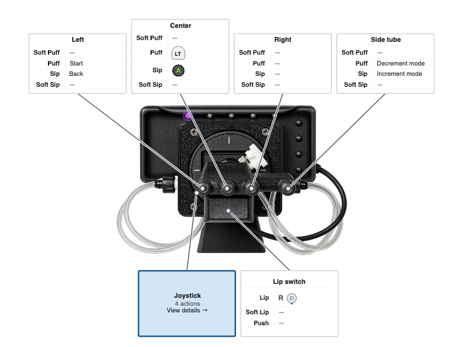
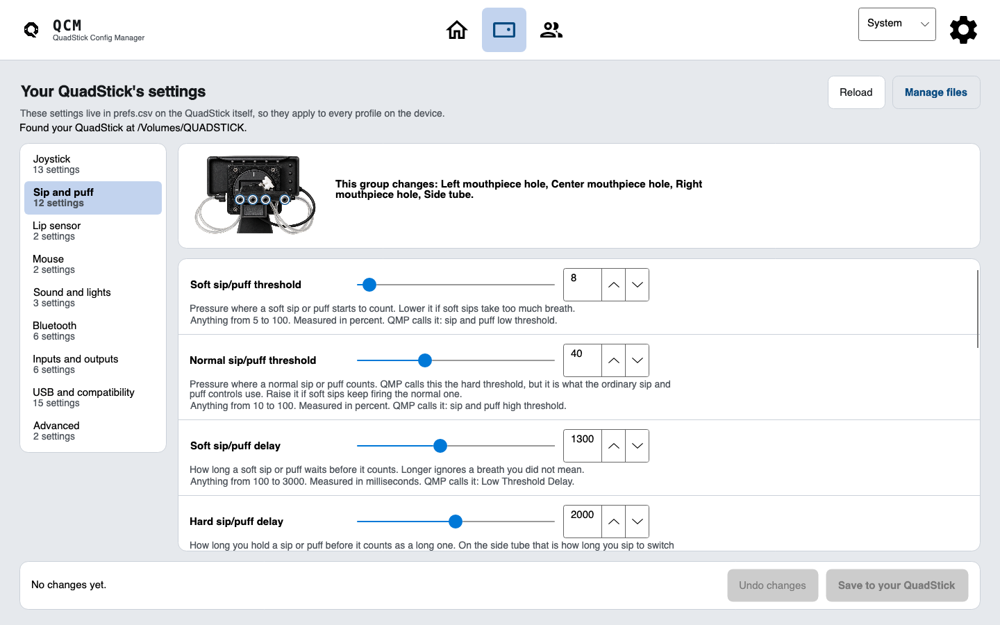

One record per client, across every visit.
Capabilities, profile history and the next step, in one place. A session starts where the last one ended.

Organisations working in adaptive gaming and rehabilitation.
Your caseload, open.
Invented clients and notes. Faces made by this-person-does-not-exist.com, not real people.
The profile is only half the story.
The free app makes a good setup. Clinic remembers why it works and what changed, so the next appointment does not start from scratch.
Client history, in order.
Visits, notes, changes and saved profiles on one timeline. No guessing which CSV was the one that finally worked.
- Visit notes and profile snapshots by date
- What changed between two appointments
- Records you can export from your own folder
The person, not just the mapping.
Capabilities, preferences and goals sit beside the technical setup, so the reason for a binding survives the visit.
Patterns across a caseload.
See what helped a similar client sooner, using your own work instead of a blank profile every time.
The editor your clients already use.
Clinic wraps the free QuadStick Config Manager. Same device view, same plain-English checks, now with a client attached to every change.



Professional where it counts.
Clear records, careful boundaries, and no mysterious cloud layer between you and your work.
Private clinic folder
Your roster lives in a private clinic folder you choose. No pooled patient database, no account, and nothing used as training data.
One roster per clinician
Simple ownership keeps the first version understandable, instead of pretending offline files are a live team system.
Free app, paid workflow
The editor stays free for everyone who uses a QuadStick. Clinic is the paid caseload layer for the teams who need it.
Bring the hard part to the table.
Tell me what your team is trying to make easier. I will show you the workflow and help you decide whether Clinic fits.